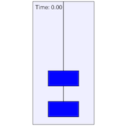

This animation simulates two boxes being hoisted by a long rope. Students are asked to draw a free-body diagram and calculate the tensions in the rope. Afterwards, the assumption of a "massless rope" is dropped, and students are asked to calculate the forces acting on each box.